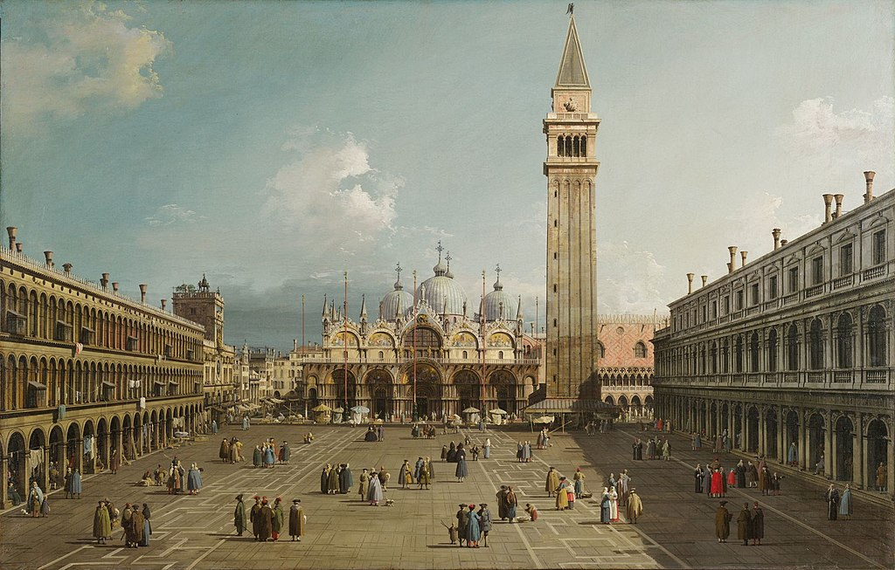

<head>
<meta charset="UTF-8" />
<meta name="keywords" content="drawing, painting" />
<meta name="description" content="drawings by Sunjy" />
<title>Sunjy</title>
<link rel="shortcut icon" type="image/x-icon" href="../../mImages/mCommon/favicon.ico" media="screen" />
<link rel="stylesheet" type="text/css" href="../../mCsses/mCommon/mCssA.css" />
<link rel="stylesheet" type="text/css" href="../../mCsses/mCommon/mCssB.css" />
<link rel="stylesheet" type="text/css" href="../../mCsses/mCommon/mCssC.css" />
<link rel="stylesheet" type="text/css" href="../../mCsses/mCommon/mCssD.css" />
<link rel="stylesheet" type="text/css" href="../../mCsses/mContent/mCssA.css" />
<link rel="stylesheet" type="text/css" href="../../mCsses/mContent/mCssB.css" />
<link rel="stylesheet" type="text/css" href="../../mCsses/mContent/mCssC.css" />
<link rel="stylesheet" type="text/css" href="../../mCsses/mContent/mCssD.css" />
</head>
<script type="text/javascript" src="../../mScripts/mContent/mContentAA.js" /></script>
<script type="text/javascript" src="../../mScripts/mContent/mContentAB.js" /></script>
<script type="text/javascript" src="../../mScripts/mContent/mContentAC.js" /></script>
<script type="text/javascript" src="../../mScripts/mContent/mContentAD.js" /></script>
<script type="text/javascript"></script> 
<script type="text/javascript">
document.write('<div class="mImgAbsolute"></div>');
/*
document.write('<p class="mFontSizeBColor" />From a white paper...</p>');
document.write('<table class="center"><tr><td>');
document.write('');
document.write('</td></tr></table>');
*/
</script>


<script type="text/javascript">
document.write('<p class="mFontSizeBColor" />Piazza San Marco with the Basilica, Venice</p>');
document.write('<p class="mFontSizeSColor" />“Piazza San Marco with the Basilica, Venice” by Canaletto depicts Venice’s principal public square of San Marco and Saint Mark’s Basilica, with its Byzantine architecture.<br><br>The bell tower dominates the scene and represents a timeless view of Venice while also capturing the details of eighteenth-century life.<br><br>Piazza San Marco, often known as St Mark’s Square, is the social, religious, and political center of Venice. The Square is dominated at its eastern end by the great church of St Mark and the Campanile of St Mark’s church.<br><br>The foreground portrays the decorative marble pattern of stone pavements that had recently been laid just before this painting was made.<br><br>The marble pattern forms a sophisticated geometrical pavement design, of which little is known about the reasoning for the particulars of the design plan.<br><br>Some have speculated that the pattern was used to regulate market stalls or to recall their former presence in the square. Others believe the model was drawn from oriental rugs, a favorite luxury item in this trading center.<br><br>This Canaletto painting is a typical example of the vedute paintings popular with Grand Tour travelers of the 1700s as a visual record of their travels.<br><br>Canaletto was one of the more famous painters of city views or vedute, especially of Venice. From 1746 to 1756, he worked in England, where he created many paintings of the sights of London.<br><br>He was highly successful in England and became famous thanks to the British merchant and connoisseur Joseph Smith, who sold his extensive collection of Canaletto’s paintings to King George III in 1762.<br><br>Canaletto’s paintings became highly prized as, during the 18th century, European monarchs vied for his grandest pictures.<br></p>');
document.write('<table class="center" /><tr><td>');
document.write('<br>The bell tower dominates the scene and represents a timeless view of Venice while also capturing the details of eighteenth-century life.<br><br>Piazza San Marco, often known as St Mark’s Square, is the social, religious, and political center of Venice. The Square is dominated at its eastern end by the great church of St Mark and the Campanile of St Mark’s church.<br><br>The foreground portrays the decorative marble pattern of stone pavements that had recently been laid just before this painting was made.<br><br>The marble pattern forms a sophisticated geometrical pavement design, of which little is known about the reasoning for the particulars of the design plan.<br><br>Some have speculated that the pattern was used to regulate market stalls or to recall their former presence in the square. Others believe the model was drawn from oriental rugs, a favorite luxury item in this trading center.<br><br>This Canaletto painting is a typical example of the vedute paintings popular with Grand Tour travelers of the 1700s as a visual record of their travels.<br><br>Canaletto was one of the more famous painters of city views or vedute, especially of Venice. From 1746 to 1756, he worked in England, where he created many paintings of the sights of London.<br><br>He was highly successful in England and became famous thanks to the British merchant and connoisseur Joseph Smith, who sold his extensive collection of Canaletto’s paintings to King George III in 1762.<br><br>Canaletto’s paintings became highly prized as, during the 18th century, European monarchs vied for his grandest pictures.<br>" />');
document.write('</td></tr></table>');
</script>


